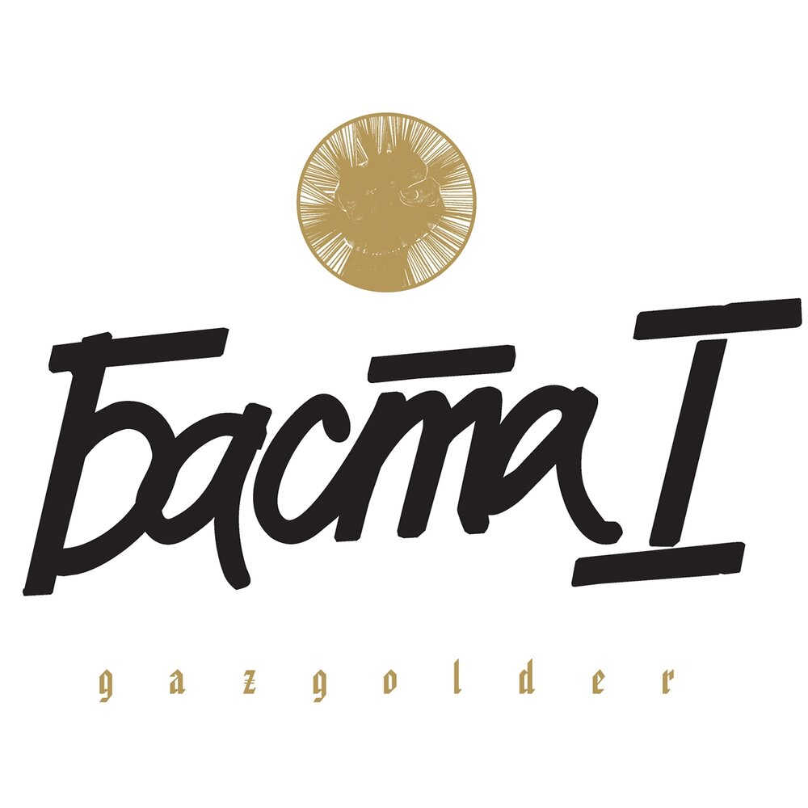
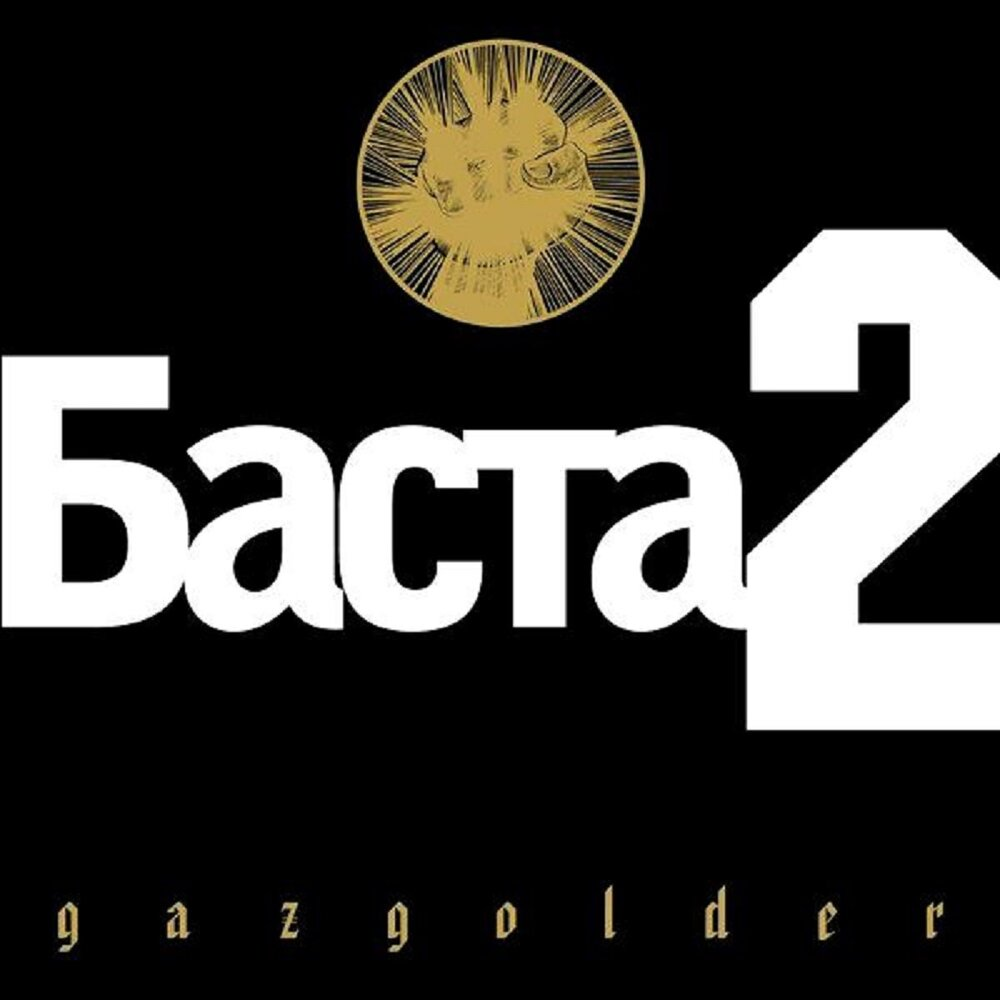
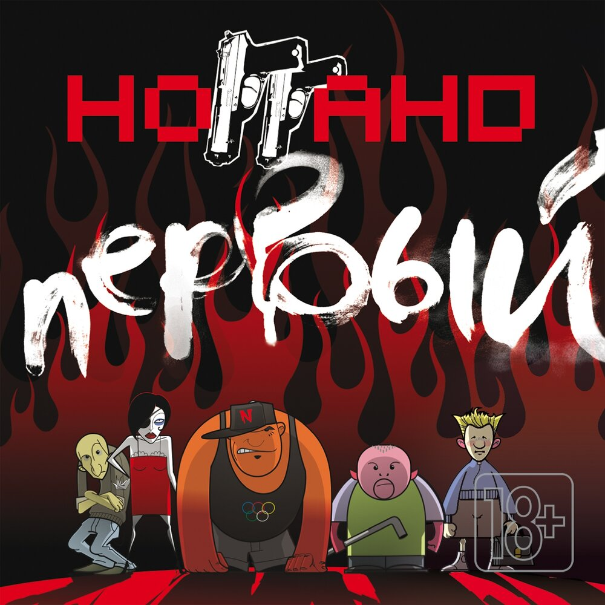

Главная | Общая информация | История | Дискография | Фильмография | Источники | Заказать | Контакты

Дебютный альбом российского рэпера Басты. Сам исполнитель называл альбом «детским», но искренним и неподдельным, отмечая, что песни получились наивными, но честными.

Второй студийный альбом российского рэпера Басты. Альбом укрепил популярность Басты и стал важным этапом его музыкальной карьеры.

Дебютный альбом Ноггано, альтернативного проекта Басты. В нём звучит более жёсткий, ироничный рэп с юмором и историями из повседневной жизни.
© Все права защищены. Мякишева А.Г. ЭФЦ331-1 2026